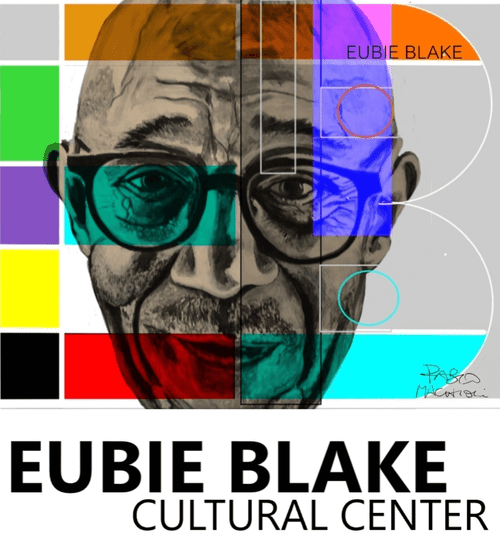

Mission first
The live homepage leads with broad mission language before showing any specific program, date, or exhibition. A new visitor has to interpret the institution before they can tell what is actually happening there.

The live homepage leads with broad mission language before showing any specific program, date, or exhibition. A new visitor has to interpret the institution before they can tell what is actually happening there.
The concept answers the basic visitor question immediately: what is on view now, when can I go, and what is the next dated event. The institution still feels like Eubie, but the sequence is more usable.
The current Roy Crosse exhibition becomes the single above-the-fold lead instead of competing with another abstract hero message.
The featured poster stays visible, but it now supports the main content instead of creating a second panel the visitor has to decode separately.
Peabody @TheEubie! appears as the next step after the exhibition details and calls to action, which makes the homepage easier to scan in order.
The brighter cyan, violet, yellow, orange, and green accents echo the portrait logo without turning the page into a full rebrand.